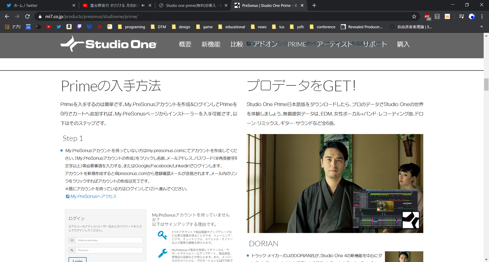
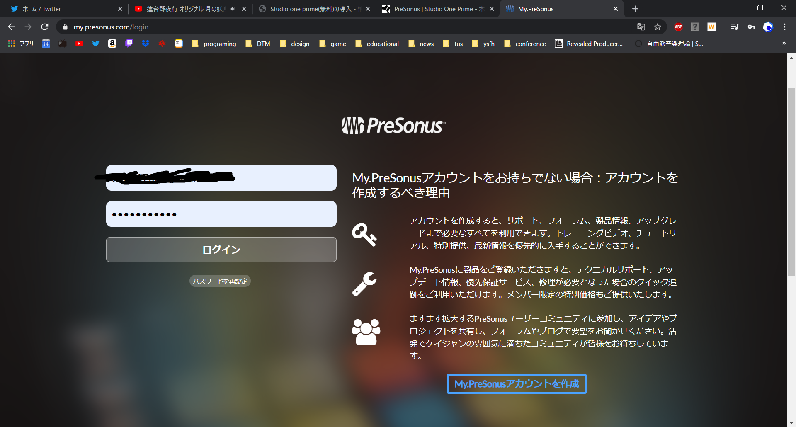
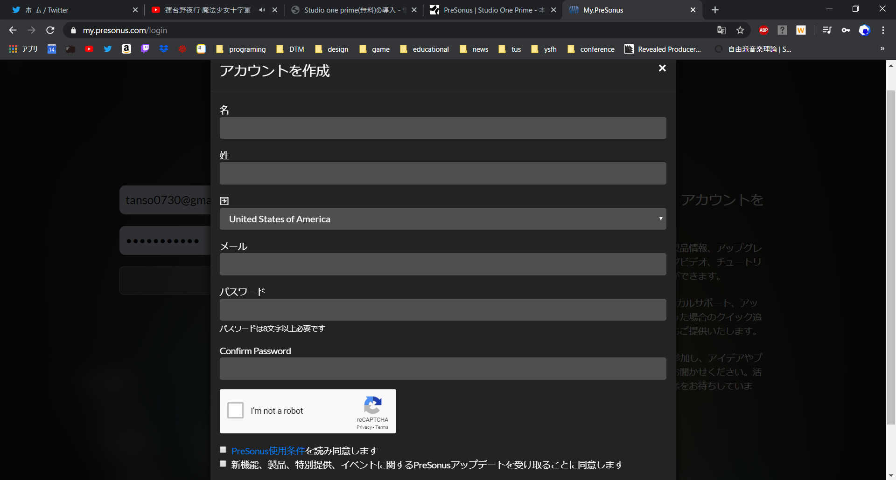

無料で使える作曲ソフト(以下DAW)はいくつかありますが、ITCで例年扱っているのはStudio one primeです。
無料版で機能は限られていますが、保存やエクスポート、エフェクターやサウンドフォントの使用など最低限の機能は備わっています。
Studio one primeはアカウント登録(無料)をする必要があります。その手順も含めて説明していきます。
PreSonus登録
Studio one primeへのリンクはこちらです。
Studio one primeのページに移動し、下へスクロールしていくと、このような説明が出てくると思います。

アカウント作成をするにはStep1にあるMyPreSonusへアクセスをクリックしましょう。
するとこのような画面が出てくるので、右下の「My.PreSoNusアカウントの作成」をクリックしましょう。

必要な項目を入力し、「保存」をクリックしたらメールが来るのを待ちましょう。

このようなメールが来たらURLへ飛び、メールにあったパスワードを入力してログインしましょう。

Studio one primeダウンロード
ログインしたら上に「Myプロダクト」という項目があるので、クリックし、Studio one prime4のインストーラをダウンロードしましょう。

これでStudio one prime 4のダウンロードは終了です！画面の指示に従いDAWを起動しましょう。